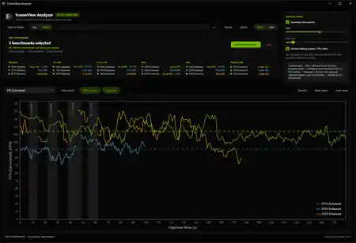
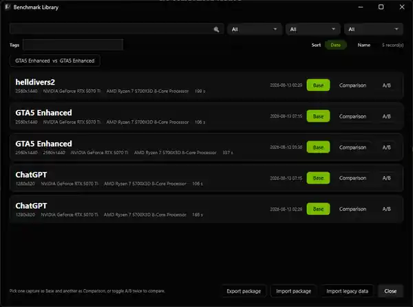
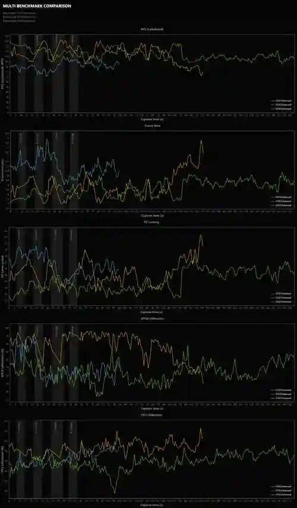

01
Pair comparison
Load a Base and Comparison run, inspect FPS, frame time, PC latency, GPU/CPU utilization and other available telemetry, and see direction-aware KPI deltas at a glance.
FrameView Analyzer turns NVIDIA FrameView captures and NVIDIA App performance logs into an interactive benchmark workspace for serious comparisons, clean telemetry analysis, and presentation-ready reports.

FrameView Analyzer keeps the raw capture useful while removing the spreadsheet archaeology. Compare runs, focus on the section that matters, preserve benchmark context, and export results without rebuilding every graph by hand.
Load a Base and Comparison run, inspect FPS, frame time, PC latency, GPU/CPU utilization and other available telemetry, and see direction-aware KPI deltas at a glance.
Compare 2–8 captures as equal peers with stable colors across charts, KPI rows, selectors, and exported reports. Ideal for graphics-setting and technology shootouts.
Detect GPU-active regions, trim capture edges, and exclude loading screens, transitions, and abnormal FPS regions so the benchmark reflects the gameplay you intended to measure.
Zoom and pan through a capture while statistics recalculate for the visible time range. FPS exposes Average, 1% Low, 0.1% Low, Max, Min, and Visible Time.
Keep captures organized with search, filters, metadata, tags, sorting, recent comparisons, and direct Base/Comparison or Multi selection without modifying the original CSV files.
Choose the benchmarks and metrics you want, add a report title, preserve benchmark metadata, and generate a clean black-background report ready for posts, videos, documentation, or review.
These screenshots are from FrameView Analyzer 3.0.0 using real benchmark captures. The website reuses the same canonical screenshots shown in the repository README.



Record a supported NVIDIA FrameView detailed log or NVIDIA App performance-overlay CSV.
Open Pair or Multi, refine the analysis range, inspect telemetry, zoom into a region, and add benchmark metadata.
Select the runs and metrics you need, then create a professional PNG report or export structured benchmark data.
FrameView Analyzer processes captures on your PC. It is open source, contains no telemetry, and makes no network calls during normal analysis. You can inspect the source, build it yourself, or verify release checksums on GitHub.
Self-contained Windows x64 build. No separate .NET runtime installation required.